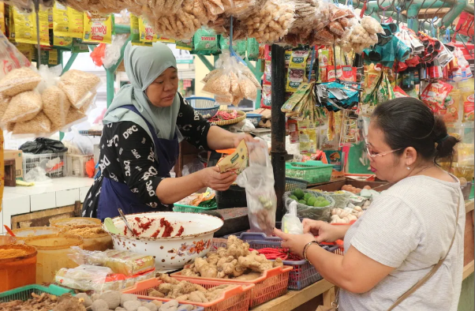

Bab 7: Perilaku Ekonomi dan Kesejahteraan
A. Pendahuluan: Ekonomi sebagai Perilaku Sosial

Letakkan file gambar dengan nama "gambar1" di folder "s1-bab-7"
Setiap manusia, sejak lahir hingga akhir hayatnya, selalu terlibat dalam kegiatan ekonomi — meskipun kadang ia tak menyadarinya. Ketika seseorang membeli nasi di warung, menanam padi di sawah, berdagang di pasar, menabung di bank, atau sekadar menukar barang dengan tetangga, ia sedang menjalankan perilaku ekonomi. Dengan kata lain, ekonomi bukan hanya tentang uang atau angka, tetapi tentang bagaimana manusia berupaya memenuhi kebutuhannya dengan sumber daya yang terbatas.
B. Kebutuhan, Kelangkaan, dan Pilihan Ekonomi
1. Kebutuhan Manusia
Kebutuhan adalah segala sesuatu yang harus dipenuhi agar manusia dapat hidup layak dan berkembang. Kebutuhan bersifat dinamis—berubah seiring waktu, tempat, dan tingkat pengetahuan. Secara umum, kebutuhan manusia dibagi menjadi tiga tingkatan:
- Kebutuhan primer: kebutuhan pokok untuk bertahan hidup, seperti makanan, pakaian, dan tempat tinggal.
- Kebutuhan sekunder: kebutuhan untuk kenyamanan dan efisiensi hidup, seperti alat transportasi, peralatan rumah tangga, dan pendidikan.
- Kebutuhan tersier: kebutuhan yang bersifat pelengkap atau prestise, seperti kendaraan mewah, liburan ke luar negeri, atau barang bermerek.
2. Kelangkaan dan Masalah Pokok Ekonomi
Kelangkaan (scarcity) terjadi ketika jumlah sumber daya tidak cukup untuk memenuhi semua kebutuhan manusia. Kelangkaan menuntut manusia membuat pilihan. Karena tidak semua kebutuhan bisa dipenuhi, manusia harus menentukan apa yang harus diproduksi, bagaimana memproduksi, dan untuk siapa hasilnya.

Letakkan file gambar dengan nama "gambar2" di folder "s1-bab-7"
C. Permintaan, Penawaran, dan Harga Pasar
1. Permintaan (Demand)
Permintaan adalah jumlah barang atau jasa yang ingin dan mampu dibeli konsumen pada berbagai tingkat harga dalam waktu tertentu.
2. Penawaran (Supply)
Penawaran adalah jumlah barang atau jasa yang ingin dan mampu dijual produsen pada berbagai tingkat harga dalam waktu tertentu.

Letakkan file gambar dengan nama "gambar3" di folder "s1-bab-7"
D. Bentuk-bentuk Pasar dan Peran Lembaga Keuangan
1. Bentuk-bentuk Pasar
Secara umum, pasar dapat dibedakan menjadi dua kategori besar: pasar persaingan sempurna dan pasar tidak sempurna.
a. Pasar Persaingan Sempurna
Pasar ini idealnya terdiri atas banyak penjual dan pembeli sehingga tidak ada pihak yang mampu mengendalikan harga.
b. Pasar Persaingan Tidak Sempurna
- Monopoli: hanya ada satu penjual yang menguasai pasar.
- Oligopoli: hanya ada beberapa produsen besar yang menguasai sebagian besar pasar.
- Monopolistik: banyak penjual menawarkan produk sejenis dengan diferensiasi.
- Monopsoni: hanya ada satu pembeli besar.

Letakkan file gambar dengan nama "gambar4" di folder "s1-bab-7"
E. Uang: Nilai, Fungsi, dan Transformasi dari Konvensional ke Digital
1. Nilai Uang
Nilai uang ditentukan oleh dua hal: nilai intrinsik dan nilai ekstrinsik.
Letakkan file gambar dengan nama "gambar5" di folder "s1-bab-7"
F. Pengelolaan Keuangan Rumah Tangga, Perusahaan, dan Negara
1. Keuangan Rumah Tangga
Keluarga adalah unit ekonomi terkecil sekaligus fondasi sistem ekonomi nasional. Di sinilah anak-anak belajar arti bekerja, menabung, dan berbagi.
2. Keuangan Perusahaan
Perusahaan adalah mesin produksi kesejahteraan. Namun, seperti halnya keluarga, perusahaan juga harus menyeimbangkan antara modal, pendapatan, dan pengeluaran.
3. Keuangan Negara
Negara berperan seperti kepala rumah tangga raksasa yang mengatur uang rakyat untuk kesejahteraan bersama.
G. Inflasi, Stabilitas Ekonomi, dan Peran Kebijakan Publik
1. Pengertian Inflasi
Inflasi adalah kenaikan harga barang dan jasa secara umum dan terus-menerus dalam jangka waktu tertentu.
2. Penyebab Inflasi
- Demand-pull inflation: terjadi saat permintaan barang dan jasa meningkat, sementara pasokannya terbatas.
- Cost-push inflation: terjadi karena biaya produksi naik sehingga produsen menaikkan harga jual.
3. Peran Pemerintah dan Bank Sentral
Stabilitas ekonomi bergantung pada dua kekuatan: kebijakan fiskal (pemerintah) dan kebijakan moneter (bank sentral).
Letakkan file gambar dengan nama "gambar6" di folder "s1-bab-7"
H. Peran Lembaga Keuangan dan Transformasi Uang Konvensional ke Digital
1. Jenis dan Peran Lembaga Keuangan
- Bank Konvensional: menghimpun dana dari masyarakat dan menyalurkannya kembali dalam bentuk kredit.
- Lembaga Keuangan Non-Bank: koperasi simpan pinjam, perusahaan pembiayaan, asuransi, fintech.
- Lembaga Keuangan Mikro: memberikan pinjaman kecil bagi pelaku usaha mikro.
I. Pengelolaan Keuangan pada Tingkat Keluarga, Perusahaan, dan Negara
1. Pengelolaan Keuangan Keluarga
Keluarga adalah unit ekonomi terkecil sekaligus fondasi bagi stabilitas sosial. Mengatur keuangan keluarga berarti mengelola sumber pendapatan, mengendalikan pengeluaran, serta menyiapkan masa depan dengan perencanaan yang matang.
2. Pengelolaan Keuangan Perusahaan
Perusahaan adalah laboratorium ekonomi yang lebih kompleks: ia tidak hanya mengatur pengeluaran dan pemasukan, tapi juga risiko, investasi, dan strategi jangka panjang.
3. Pengelolaan Keuangan Negara
Negara, seperti keluarga dan perusahaan, juga harus mengelola keuangannya — hanya saja dalam skala jauh lebih besar dan dengan konsekuensi sosial-politik yang lebih luas.
J. Kontribusi Individu dan Masyarakat dalam Pembangunan Ekonomi dan Kesejahteraan Kolektif
1. Peran Individu dalam Ekonomi
- Produktivitas dan Etos Kerja: individu yang bekerja dengan efisien, kreatif, dan bertanggung jawab ikut meningkatkan nilai tambah dalam sistem ekonomi.
- Konsumsi yang Bijak: konsumen berperan dalam menentukan arah produksi. Dengan memilih produk lokal, ramah lingkungan, dan etis, masyarakat mendorong industri untuk lebih berkeadilan.
- Literasi Keuangan dan Kemandirian Ekonomi: individu yang melek finansial tidak hanya memperkuat dirinya, tapi juga mengurangi beban sosial negara.
2. Peran Masyarakat dalam Ekonomi Kolektif
- Koperasi dan Ekonomi Gotong Royong: koperasi adalah bentuk ekonomi khas Indonesia yang memadukan prinsip efisiensi pasar dengan semangat kebersamaan.
- Ekonomi Sosial dan Komunitas Lokal: pasar tradisional, UMKM, dan ekonomi kreatif lokal membangun struktur ekonomi yang lebih resilien.
- Gerakan Ekonomi Hijau dan Berkelanjutan: kesadaran lingkungan kini menjadi bagian dari etika ekonomi.